設計小學堂-UI色彩實務應用篇
配色，看起來似乎是每個人都會的一件事，在很多人的心裡不過就是把幾個顏色湊在一起而已，好像沒什麼難度吧～不不不，這誤會可大了！
配色這回事，可是入門簡單，但精通很難的啊！！尤其如果不是科班出身，或有具有美感相關經驗的話，當自己親自嘗試配色的時候，有很高的機率會發現怎麼配怎麼怪，然後就會進入一個一直拉繪圖軟體的調色盤拉…超…久…的狀態。
不過不用太擔心，今天不藏私，用淺顯易懂的方法跟大家分享1個重點、3個原則、2個小技巧。降低做出不忍直視的UI機率。在追求顏色美美的UI之前，先達成不要醜啊～
重點1：了解色彩的強度
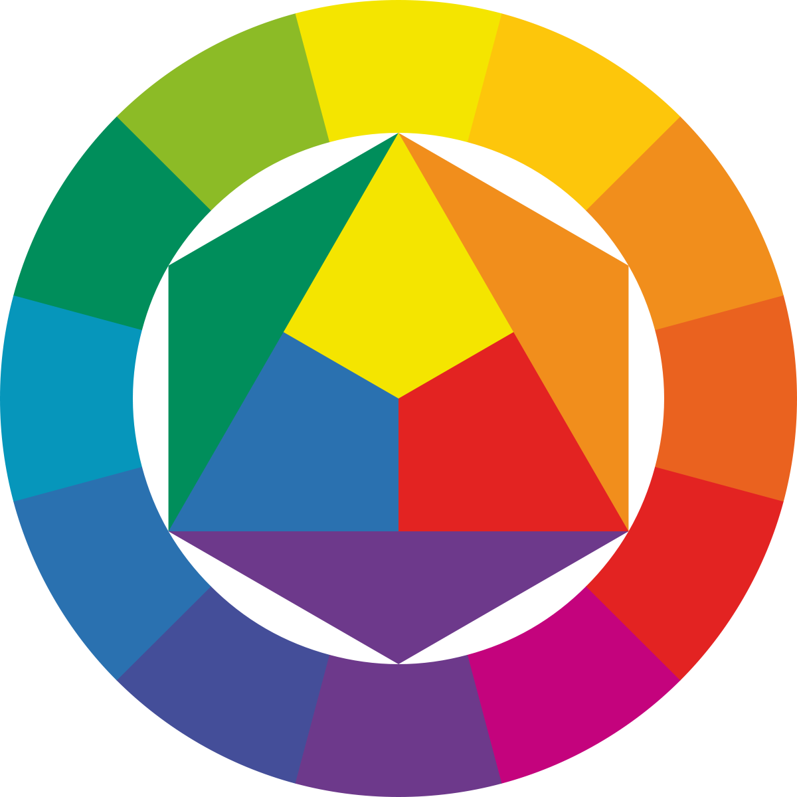
伊登12色相環
色彩本身是有視覺強弱之分的，整體來說由強至弱依序為：
暖色系(前進色) > 冷色系(後退色) > 灰階
而同類色系互比則是：
深色 > 淺色
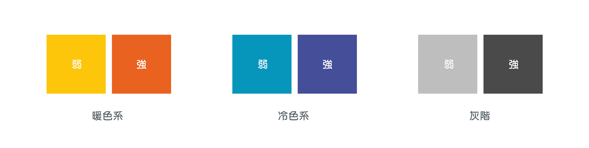
相同顏色則是：
高彩度(飽和度) > 低彩度(飽和度)
高明度 < 低明度
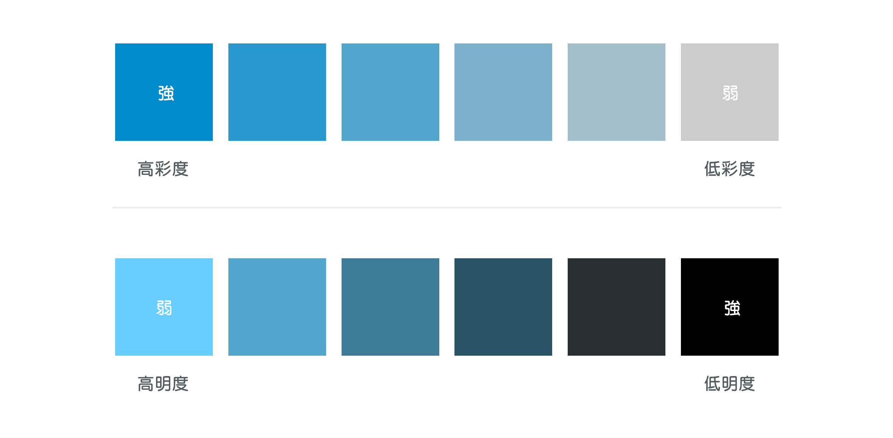
在知道怎麼區分色彩的視覺強弱程度後，實務上配色的時候就可以依循三個原則
原則1：淺底深字，深底淺字
網頁Layout、UI按鈕，或是簡報設計等任何需要使用色彩與文字搭配的地方，都可以依循這個原則。當底色使用的顏色偏淺色時，上方的文字就使用深色；反之若底色為深色時，文字就使用淺色。
這個原則可以確保文字和底色之間有清晰的辨識度，不會因為兩者之間的視覺強度太接近，而造成文字看不清楚的情形。
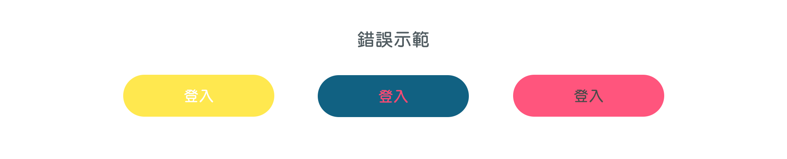
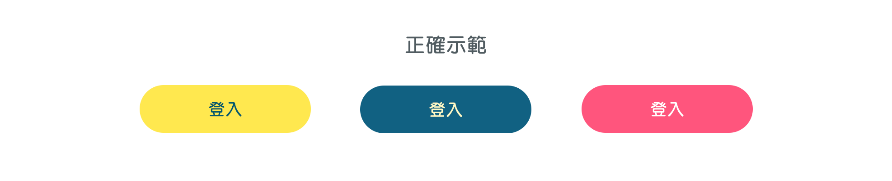
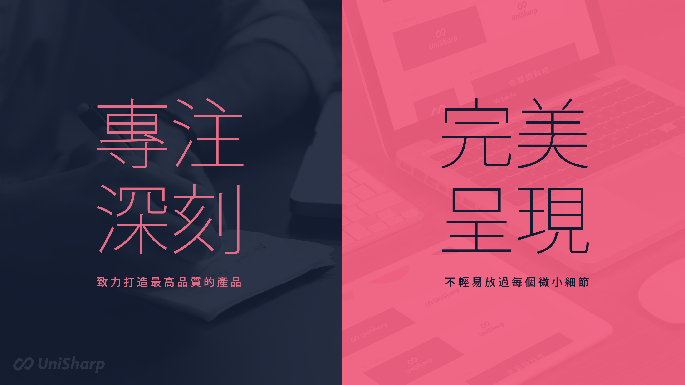
原則2：強化重點，減弱其他
當較多的內容或物件排放在一起，但沒有妥善處理的時候，就很有可能會發生畫面變得雜亂，東西太多不知道要先看哪的情形，瀏覽的流暢度和UI的使用體驗會變得較差
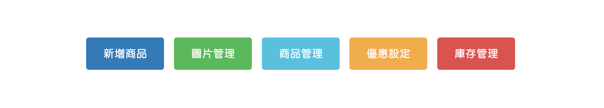
這時就必須找出畫面上最重要的內容，透過「強化重點，減弱其他」的作法將重點內容區隔出來
變更色彩
直接給予畫面上的重要內容視覺強度較高(暖色系or高彩度or低明度)的顏色，並降低其他內容的強度
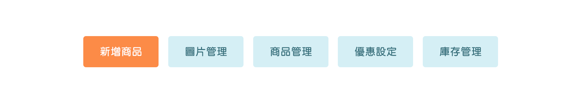
加上底色
或是透過不同底色的差異，來加強重點內容
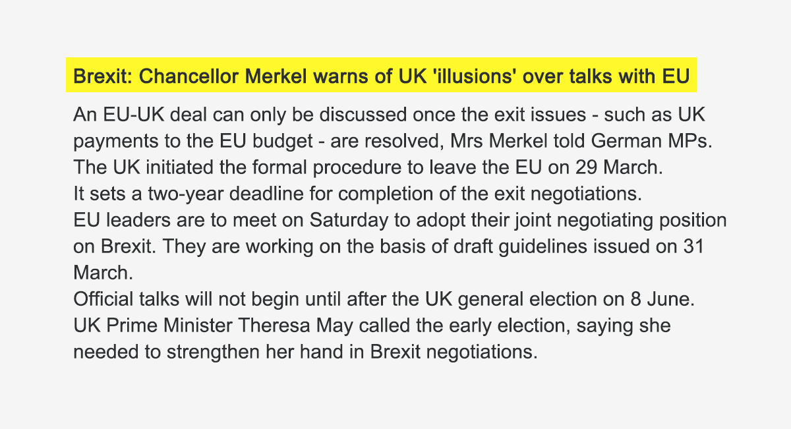
改變字級
在顏色不變的情況下，調整文字大小和粗細也是一種不錯的方法
不論是哪種作法，關鍵都在於拉大重點和其他內容在視覺上的對比度(擴大貧富差距XD)，讓重要的內容能成為視覺焦點
原則3：越鮮豔，越謹慎
色彩跟節日的關係非常密切，我們會看到某些顏色很常出現在一些節日裡，像是聖誕節的紅綠，中秋節的黃藍，情人節的粉紅等等
而配色是有流行性的，不同年代的配色趨勢也不太一樣，近幾年從Flat Design開始，到Google的Material Design，都能觀察出UI配色有越來越鮮豔的趨勢
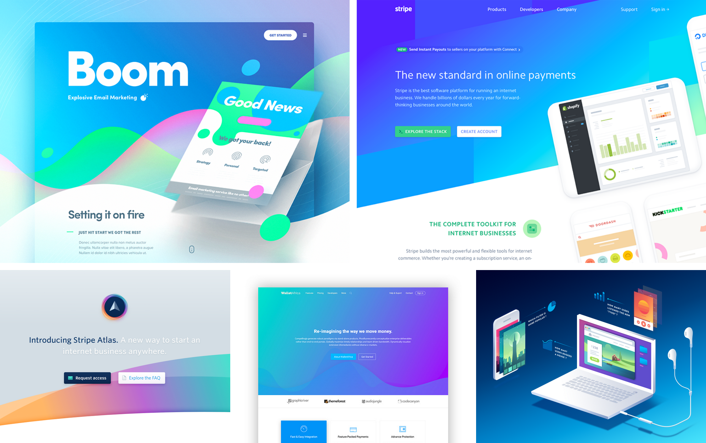
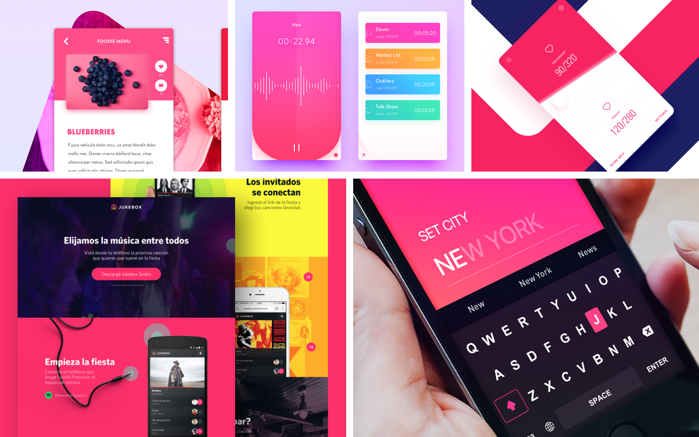
但越鮮豔的顏色其實是越難掌握的，尤其是當多種高彩度的顏色要互相搭配的話，更需要對色彩有比較高的敏銳度，才不會讓畫面變霓虹燈，或看上去太刺眼
所以若不是很有把握的話，盡量不要選擇彩度太高的顏色
接下來分享2個相當基礎，但很實用的UI配色小技巧
小技巧1：灰階+1個主色
使用灰階加上一個主色，是在打造新產品的UI時很常使用的一個技巧
將主色作為Call to Action或是強調重點時所用的重要顏色，例如：產品LOGO、Call to Action的按鈕、重要的標題文字等等，而其他次要的內容則可用不同深淺的灰階來呈現
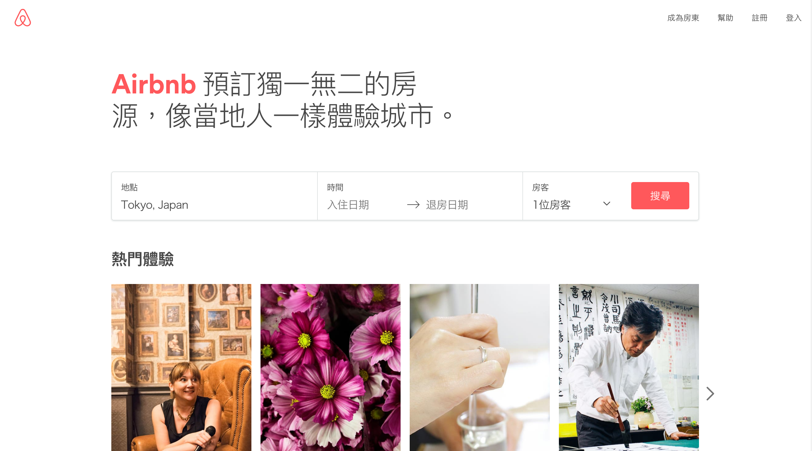
由於灰階的視覺強度較低，跟主色相較之下，目光焦點會很容易的停留在有主色的元素上。
小技巧2：灰階+1個主色+1個輔助色
除了灰階與主色之外，再加上一個輔助色
輔助色的視覺強度不能高於主色，才能維持主色為畫面焦點的作用。而輔助色可以運用在次要內容上，例如與Call to Action不同目的的按鈕，或是畫面上非最重要但也希望使用者留意的元素上。
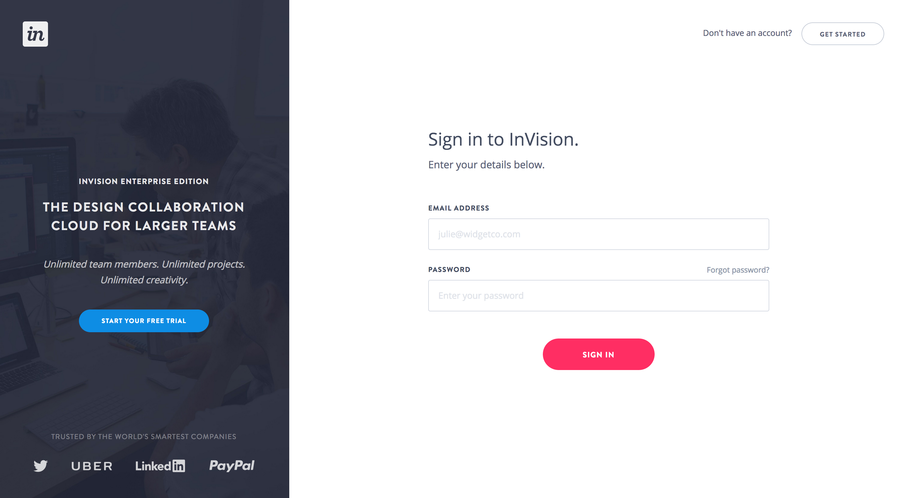
上面分享的這些內容，是依據我自己的設計經驗所歸納出的幾個心得，希望能稍稍幫助大家在如何用色上的煩惱！